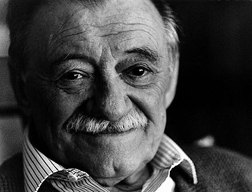
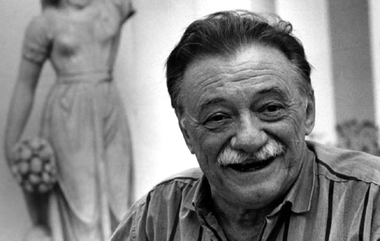
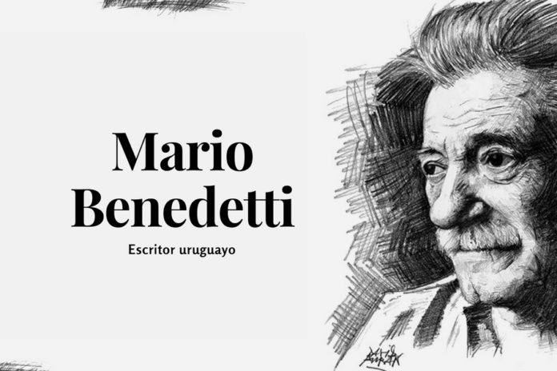

|
Final de la pagina
|
|
Biografia

Escritor uruguayo. Mario Benedetti fue un destacado poeta, novelista, dramaturgo, cuentista y crítico, y, junto con Juan Carlos Onetti, la figura más relevante de la literatura uruguaya de la segunda mitad del siglo XX y uno de los grandes nombres del Boom de la literatura hispanoamericana. Cultivador de todos los géneros, su obra es tan prolífica como popular; novelas suyas como La tregua (1960) o Gracias por el fuego (1965) fueron adaptadas para la gran pantalla, y diversos cantantes contribuyeron a difundir su poesía musicando sus versos.
|
|

Mario Benedetti trabajó en múltiples oficios antes de 1945, año en que inició su actividad de periodista en La Mañana, El Diario, Tribuna Popular y el semanario Marcha, entre otros. En la obra de Mario Benedetti pueden diferenciarse al menos dos periodos marcados por sus circunstancias vitales, así como por los cambios sociales y políticos de Uruguay y el resto de América Latina. En el primero, Benedetti desarrolló una literatura realista de escasa experimentación formal, sobre el tema de la burocracia pública, a la cual él mismo pertenecía, y el espíritu pequeño-burgués que la anima.
El gran éxito de sus libros poéticos y narrativos, desde los versos de Poemas de la oficina (1956) hasta los cuentos sobre la vida funcionarial de Montevideanos (1959), se debió al reconocimiento de los lectores en el retrato social y en la crítica, en gran medida de índole ética, que el escritor formulaba. Esta actitud tuvo como resultado un ensayo ácido y polémico: El país de la cola de paja (1960), y su consolidación literaria en dos novelas importantes: La tregua (1960), historia amorosa de fin trágico entre dos oficinistas, y Gracias por el fuego (1965), que constituye una crítica más amplia de la sociedad nacional, con la denuncia de la corrupción del periodismo como aparato de poder.
En el segundo periodo de este autor, sus obras se hicieron eco de la angustia y la esperanza de amplios sectores sociales por encontrar salidas socialistas a una América Latina subyugada por represiones militares. Durante más de diez años, Mario Benedetti vivió en Cuba, Perú y España como consecuencia de esta represión. Su literatura se hizo formalmente más audaz. Escribió una novela en verso, El cumpleaños de Juan Ángel (1971), así como cuentos fantásticos como los de La muerte y otras sorpresas (1968). Trató el tema del exilio en la novela Primavera con una esquina rota (1982) y se basó en su infancia y juventud para la novela autobiográfica La borra del café (1993).
|
|

En su obra poética se vieron igualmente reflejadas las circunstancias políticas y vivenciales del exilio uruguayo y el regreso a casa: La casa y el ladrillo (1977), Vientos del exilio (1982), Geografías (1984) y Las soledades de Babel (1991). En teatro, Mario Benedetti denunció la institución de la tortura con Pedro y el capitán (1979), y en el ensayo comentó diversos aspectos de la literatura contemporánea en libros como Crítica cómplice (1988). Reflexionó sobre problemas culturales y políticos en El desexilio y otras conjeturas (1984), obra que recoge su labor periodística desplegada en Madrid.
También en esos años recopiló sus numerosos relatos breves, reordenándolos, en la colección Cuentos completos (1986), que sería ampliada en 1994. Junto a la solidez de su estructura literaria, debe destacarse como rasgo esencial de los relatos de Benedetti la presencia de un elemento impalpable, no formulado explícitamente, pero que adquiere en sus textos el carácter de una potente irradiación de ondas telúricas que recorre a los protagonistas de sus historias, para ser transmitida por ellos mismos (casi sin intervención del autor, podría decirse) directamente al lector. La predilección por este género y la pericia que mostró en él emparenta a Mario Benedetti con los grandes autores del Boom de la literatura hispanoamericana de los años 60, especialmente con los maestros del relato corto (los argentinos Jorge Luis Borges y Julio Cortázar); de hecho, por el altísimo nivel del conjunto de su obra, se le concede la misma relevancia que a los restantes protagonistas del Boom, desde los mexicanos Juan Rulfo y Carlos Fuentes hasta el peruano Mario Vargas Llosa o el premio Nobel colombiano Gabriel García Márquez .
En 1997 publicó la novela Andamios, de marcado signo autobiográfico, en la que da cuenta de las impresiones que siente un escritor uruguayo cuando, tras muchos años de exilio, regresa a su país. En 1998 regresó a la poesía con La vida, ese paréntesis, y en el mes de mayo del año siguiente obtuvo el VIII Premio de Poesía Iberoamericana Reina Sofía. En 1999 publicó el séptimo de sus libros de relatos, Buzón de tiempo, integrado por treinta textos. Ese mismo año vio la luz su Rincón de haikus, clara muestra de su dominio de este género poético japonés de signo minimalista, tras entrar en contacto con él años atrás gracias a Cortázar.
En marzo de 2001 recibió el Premio Iberoamericano José Martí en reconocimiento a toda su obra; ese mismo año publicó El mundo en que respiro (poemas) y dos años más tarde presentó un nuevo libro de relatos: El porvenir de mi pasado (2003). Al año siguiente publicó Memoria y esperanza, una recopilación de poemas, reflexiones y fotografías que resumen las cavilaciones del autor sobre la juventud. También en 2004 se publicó en Argentina el libro de poemas Defensa propia.
Ese mismo año fue investido doctor honoris causa por la Universidad de la República del Uruguay; durante la ceremonia de investidura recibió un calurosísimo homenaje de sus compatriotas. En 2005 fue galardonado con el Premio Internacional Menéndez Pelayo. Sus últimos trabajos fueron los poemarios Canciones del que no canta (2006) y Testigo de uno mismo (2008), el ensayo Vivir adrede (2007) y el drama El viaje de salida (2008).
|
Biografia de Mario Benedetti
Descarga una Antalogia de poemas
Inicio
|